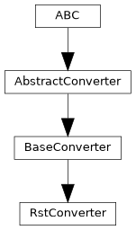

pyTRLCConverter.rst_converter
Converter to reStructuredText format.
Author: Gabryel Reyes (gabryel.reyes@newtec.de)
Classes
RstConverter provides functionality for converting to a reStructuredText format. |
Module Contents
- class pyTRLCConverter.rst_converter.RstConverter(args: Any)[source]
Bases:
pyTRLCConverter.base_converter.BaseConverter
RstConverter provides functionality for converting to a reStructuredText format.
- _convert_record_object(record: trlc.ast.Record_Object, level: int, translation: dict | None) pyTRLCConverter.ret.Ret[source]
Process the given record object.
- Parameters:
record (Record_Object) – The record object.
level (int) – The record level.
translation (Optional[dict]) – Translation dictionary for the record object. If None, no translation is applied.
Returns
Ret – Status
- _create_rst_link_from_record_object_reference(record_reference: trlc.ast.Record_Reference) str[source]
Create a reStructuredText cross-reference from a record reference. It considers the file name, the package name, and the record name.
- Parameters:
record_reference (Record_Reference) – Record reference
- Returns:
reStructuredText cross-reference
- Return type:
str
- _file_name_trlc_to_rst(file_name_trlc: str) str[source]
Convert a TRLC file name to a reStructuredText file name.
- Parameters:
file_name_trlc (str) – TRLC file name
- Returns:
reStructuredText file name
- Return type:
str
- _generate_out_file(file_name: str) pyTRLCConverter.ret.Ret[source]
Generate the output file.
- Parameters:
file_name (str) – The output file name without path.
item_list ([Element]) – List of elements.
- Returns:
Status
- Return type:
- _get_rst_heading_level(level: int) int[source]
Get the reStructuredText heading level from the TRLC object level. Its mandatory to use this method to calculate the reStructuredText heading level. Otherwise in single document mode the top level heading will be wrong.
- Parameters:
level (int) – The TRLC object level.
- Returns:
reStructuredText heading level
- Return type:
int
- _get_trlc_ast_walker() pyTRLCConverter.trlc_helper.TrlcAstWalker[source]
If a record object contains a record reference, the record reference will be converted to a Markdown link. If a record object contains an array of record references, the array will be converted to a reStructuredText list of links. Otherwise the record object fields attribute values will be written to the reStructuredText table.
- Returns:
The TRLC AST walker.
- Return type:
- _on_implict_null(_: trlc.ast.Implicit_Null) str[source]
Process the given implicit null value.
- Returns:
The implicit null value.
- Return type:
str
- _on_record_reference(record_reference: trlc.ast.Record_Reference) str[source]
Process the given record reference value and return a reStructuredText link.
- Parameters:
record_reference (Record_Reference) – The record reference value.
- Returns:
reStructuredText link to the record reference.
- Return type:
str
- _on_string_literal(string_literal: trlc.ast.String_Literal) str[source]
Process the given string literal value.
- Parameters:
string_literal (String_Literal) – The string literal value.
- Returns:
The string literal value.
- Return type:
str
- _other_dispatcher(expression: trlc.ast.Expression) str[source]
Dispatcher for all other expressions.
- Parameters:
expression (Expression) – The expression to process.
- Returns:
The processed expression.
- Return type:
str
- _render(package_name: str, type_name: str, attribute_name: str, attribute_value: str) str[source]
Render the attribute value depened on its format.
- Parameters:
package_name (str) – The package name.
type_name (str) – The type name.
attribute_name (str) – The attribute name.
attribute_value (str) – The attribute value.
- Returns:
The rendered attribute value.
- Return type:
str
- _write_empty_line_on_demand() None[source]
Write an empty line if necessary.
For proper reStructuredText formatting, the first written part shall not have an empty line before. But all following parts (heading, table, paragraph, image, etc.) shall have an empty line before. And at the document bottom, there shall be just one empty line.
- begin() pyTRLCConverter.ret.Ret[source]
Begin the conversion process.
- Returns:
Status
- Return type:
- convert_record_object_generic(record: trlc.ast.Record_Object, level: int, translation: dict | None) pyTRLCConverter.ret.Ret[source]
Process the given record object in a generic way.
The handler is called by the base converter if no specific handler is defined for the record type.
- Parameters:
record (Record_Object) – The record object.
level (int) – The record level.
translation (Optional[dict]) – Translation dictionary for the record object. If None, no translation is applied.
- Returns:
Status
- Return type:
- convert_section(section: str, level: int) pyTRLCConverter.ret.Ret[source]
Process the given section item. It will create a reStructuredText heading with the given section name and level.
- Parameters:
section (str) – The section name
level (int) – The section indentation level
- Returns:
Status
- Return type:
- enter_file(file_name: str) pyTRLCConverter.ret.Ret[source]
Enter a file.
- Parameters:
file_name (str) – File name
- Returns:
Status
- Return type:
- static get_description() str[source]
Return converter description.
- Returns:
Converter description
- Return type:
str
- static get_subcommand() str[source]
Return subcommand token for this converter.
- Returns:
Parser subcommand token
- Return type:
str
- leave_file(file_name: str) pyTRLCConverter.ret.Ret[source]
Leave a file.
- Parameters:
file_name (str) – File name
- Returns:
Status
- Return type:
- classmethod register(args_parser: Any) None[source]
Register converter specific argument parser.
- Parameters:
args_parser (Any) – Argument parser
- static rst_append_table_row(row_values: List[str], max_widths: List[int], escape: bool = True) str[source]
Append a row to a reStructuredText table in grid format. The values will be automatically escaped for reStructuredText if necessary. Supports multi-line cell values.
- Parameters:
row_values ([str]) – List of row values.
max_widths ([int]) – List of maximum widths for each column.
escape (bool) – Escapes every row value (default: True).
- Returns:
Table row
- Return type:
str
- static rst_create_admonition(text: str, file_name: str, escape: bool = True) str[source]
Create a reStructuredText admonition with a label. The text will be automatically escaped for reStructuredText if necessary.
- Parameters:
text (str) – Admonition text
file_name (str) – File name where the heading is found
escape (bool) – Escape the text (default: True).
- Returns:
reStructuredText admonition with a label
- Return type:
str
- static rst_create_diagram_link(diagram_file_name: str, diagram_caption: str, escape: bool = True) str[source]
Create a reStructuredText diagram link. The caption will be automatically escaped for reStructuredText if necessary.
- Parameters:
diagram_file_name (str) – Diagram file name
diagram_caption (str) – Diagram caption
escape (bool) – Escapes caption (default: True).
- Returns:
reStructuredText diagram link
- Return type:
str
- static rst_create_heading(text: str, level: int, file_name: str, escape: bool = True) str[source]
Create a reStructuredText heading with a label. The text will be automatically escaped for reStructuredText if necessary.
- Parameters:
text (str) – Heading text
level (int) – Heading level [1; 7]
file_name (str) – File name where the heading is found
escape (bool) – Escape the text (default: True).
- Returns:
reStructuredText heading with a label
- Return type:
str
- static rst_create_link(text: str, target: str, escape: bool = True) str[source]
Create a reStructuredText cross-reference. The text will be automatically escaped for reStructuredText if necessary. There will be no newline appended at the end.
- Parameters:
text (str) – Link text
target (str) – Cross-reference target
escape (bool) – Escapes text (default: True).
- Returns:
reStructuredText cross-reference
- Return type:
str
- static rst_create_list(list_values: List[str], escape: bool = True) str[source]
Create a unordered reStructuredText list. The values will be automatically escaped for reStructuredText if necessary.
- Parameters:
list_values (List[str]) – List of list values.
escape (bool) – Escapes every list value (default: True).
- Returns:
reStructuredText list
- Return type:
str
- static rst_create_table_head(column_titles: List[str], max_widths: List[int], escape: bool = True) str[source]
Create the table head for a reStructuredText table in grid format. The titles will be automatically escaped for reStructuredText if necessary.
- Parameters:
column_titles ([str]) – List of column titles.
max_widths ([int]) – List of maximum widths for each column.
escape (bool) – Escape the titles (default: True).
- Returns:
Table head
- Return type:
str
- static rst_escape(text: str) str[source]
Escapes the text to be used in a reStructuredText document.
- Parameters:
text (str) – Text to escape
- Returns:
Escaped text
- Return type:
str
- static rst_role(text: str, role: str, escape: bool = True) str[source]
Create role text in reStructuredText. The text will be automatically escaped for reStructuredText if necessary. There will be no newline appended at the end.
- Parameters:
text (str) – Text
color (str) – Role
escape (bool) – Escapes text (default: True).
- Returns:
Text with role
- Return type:
str
- OUTPUT_FILE_NAME_DEFAULT = 'output.rst'
- TOP_LEVEL_DEFAULT = 'Specification'
- _ast_meta_data = None
- _base_level = 1
- _empty_line_required = False
- _excluded_paths = []
- _fd = None
- _out_path